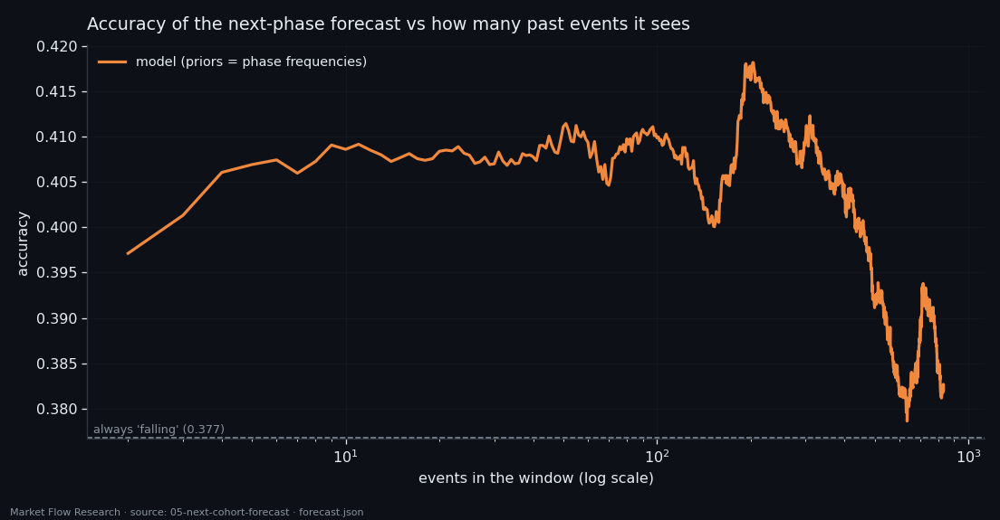
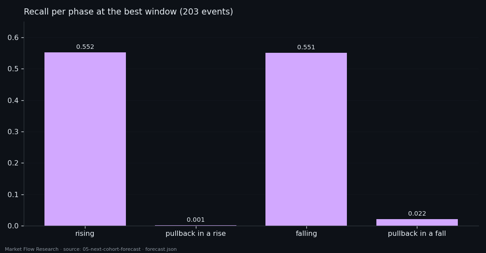

Predicting the Next Phase of a Move From the Order Book — 832 Window Sizes, One Honest Ceiling
Every event of BTC's order book sits in one of four phases of a zigzag: rising, a pullback inside a rise, falling, or a pullback inside a fall. We asked a closed-form linear model to name the phase of the next event from the N events before it — and tried every N from 2 to 833. The signal is real from N = 2, peaks at 0.418 accuracy on about one zigzag leg of history against a 0.377 baseline, and is essentially binary: up or down, the pullbacks go unseen. The labels of the past alone would score 0.976.
Full walkthrough — streamed from YouTube.
① Four phases of a zigzag
The labels come from two zigzags laid on the same price series: a big one with a 2.3% threshold and a nested one at 0.8%. Their pivots merge into a single timeline, and the stretch between two neighbouring pivots is a segment. Each 210-second event lies in exactly one segment and takes two labels from it: the direction of the big move it belongs to, and the direction of its own segment. The pair is its cohort.
On the BTC training set (24,150 events, 14 February – 16 August 2026; 116 big pivots and 472 small ones) that gives 8,878 rising events, 2,742 pullbacks inside a rise, 9,123 falling and 3,195 pullbacks inside a fall; 212 events sit outside the zigzag. Pullbacks are a separate cohort on purpose: they occupy the same place in a move as trend segments but point the other way, and a bot that confuses the two gets shaken out of every trend.
The labels are known only in hindsight — a zigzag pivot is confirmed by the move that follows it. That is why the forecast below never sees the labels of past events, only their order-book description.

② A closed-form model, 832 window sizes
The forecaster is deliberately the simplest honest thing: each cohort is a Gaussian in the space of the window, with a shared covariance, and the decision is Bayes' rule — a linear discriminant computed from sums in closed form. No iterations, no seed, no tuning. Each event contributes two numbers (the mean over its 15 blocks of `balance` and `d_balance`), so a window of N events is 2N columns; the target event itself is never in its own window.
Windows of neighbouring targets overlap, so a random split would leak. Instead the training set is cut into five contiguous time blocks; each block is predicted by a model trained on the other four, with a quarantine of ±833 events around it so no training window touches a test window.
Then the window grows: N from 2 to 833 in steps of one — 832 separate runs on the same 23,194 targets. Against the baseline "always say falling" (0.3768 ± 0.0032), accuracy is 0.3971 at N = 2 (+6.4 standard errors), rises to a peak of 0.4182 at N = 203 (+13.0 SE) and falls back almost to the baseline beyond 600 events. The best window is about the length of one 2.3% leg; more distant history adds more noise than information.

③ Binary in practice — and the ceiling that labels would give
Look at what the best model actually says. At N = 203 it names 55.2% of rising events and 55.1% of falling ones — and 0.1% and 2.2% of the two pullback cohorts. Pullbacks are a third the size of their trend cohorts, and the order-book window does not separate them, so the model simply stops naming them. Formally the four-cohort criterion passes (balanced accuracy 0.284–0.291 against 0.25 by chance); in practice the model splits the field into "up" and "down", and weakly.
The gain is small: +2 points at N = 2, +4.1 at the best window. That is a feature, not a trading signal.
The most useful number in the study is a different one. A "persistence oracle" — the next event has the same cohort as the previous one — scores 0.9757. It cannot be traded, because the previous label is only known after the zigzag confirms it. But it shows where the structure lives: cohorts run in long stretches, and almost all the predictability is in the sequence of labels, not in 210·N seconds of book state. So the next step in this series is not a longer window. It is estimating the phase of the current event — where in its leg the market is right now.

Reproduce this study
- Research log (.md, Ukrainian): goal, data, plan, scripts, every confirmed stage and table — enough to rerun the study
- Reproduction kit (.zip): the study's scripts, project rules and base scripts that build every class
If this changed how you read the tape, the natural next step is Volume Is the Fuel — Not the Steering Wheel — We recorded the Binance order book every second for six coins over five months and ran eighteen tests on what volume really does.
Volume Is the Fuel — Not the Steering Wheel
We recorded the Binance order book every second for six coins over five months and ran eighteen tests on what volume really does.
About Market Research Lab — What We Collect and Why
Most market commentary is storytelling.
From Calm to Calm: a Standard for What Counts as a Signal (BTC)
We stopped defining market signals with a stopwatch.
The Wall That Goes Quiet: What Resting Liquidity Predicts
We measured resting limit liquidity sitting on both sides of the book second by second across six coins, and asked the only question that matters:….
Comments
Discussion is powered by GitHub. Enable it by adding secrets/giscus.json (repo IDs from giscus.app).